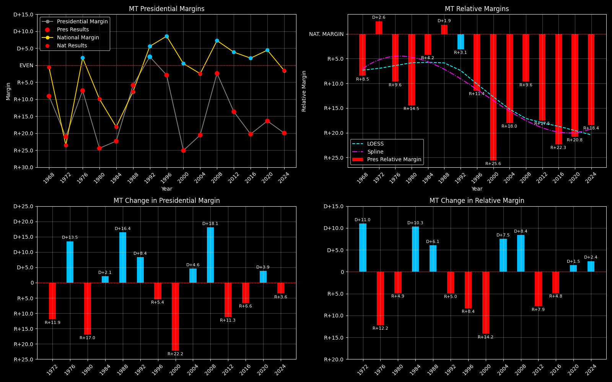

← Back to Map

Montana (MT) statewide
Montana (MT) — Data
| Year | EVs | D | R | Margin | Rel. Margin | Nat. Margin | Margin Δ | Rel. Margin Δ | Nat. Margin Δ | Other votes | Total votes |
|---|
| 1968 | 4 | 114,117(41.8%) | 138,835(50.9%) | R+9.8 | R+9.1 | R+0.7 | | | | 20,015(7.3%) | 272,967 |
| 1972 | 4 | 120,197(39.5%) | 183,976(60.5%) | R+21.0 | D+2.6 | R+23.6 | R+11.2 | D+11.7 | R+22.9 | 0(0.0%) | 304,173 |
| 1976 | 4 | 149,259(45.4%) | 173,703(52.8%) | R+7.6 | R+9.8 | D+2.2 | D+13.4 | R+12.4 | D+25.8 | 5,772(1.8%) | 328,734 |
| 1980 | 4 | 118,032(32.4%) | 206,814(56.8%) | R+27.3 | R+16.7 | R+10.6 | R+19.8 | R+6.9 | R+12.8 | 39,106(10.7%) | 363,952 |
| 1984 | 4 | 146,742(38.2%) | 232,450(60.5%) | R+22.6 | R+4.5 | R+18.1 | D+4.7 | D+12.2 | R+7.5 | 5,185(1.3%) | 384,377 |
| 1988 | 4 | 168,956(46.2%) | 190,412(52.1%) | R+6.0 | D+1.8 | R+7.8 | D+16.6 | D+6.3 | D+10.4 | 6,326(1.7%) | 365,694 |
| 1992 | 3 | 154,507(37.6%) | 144,207(35.1%) | D+3.4 | R+3.5 | D+6.9 | D+9.4 | R+5.3 | D+14.7 | 111,897(27.3%) | 410,611 |
| 1996 | 3 | 167,922(41.2%) | 179,652(44.1%) | R+3.4 | R+12.8 | D+9.5 | R+6.8 | R+9.4 | D+2.6 | 59,687(14.7%) | 407,261 |
| 2000 | 3 | 137,126(33.4%) | 240,178(58.4%) | R+27.3 | R+27.8 | D+0.5 | R+23.9 | R+15.0 | R+8.9 | 33,693(8.2%) | 410,997 |
| 2004 | 3 | 173,710(38.6%) | 266,063(59.1%) | R+21.0 | R+18.5 | R+2.5 | D+6.3 | D+9.3 | R+3.0 | 10,672(2.4%) | 450,445 |
| 2008 | 3 | 232,159(47.1%) | 243,882(49.5%) | R+2.5 | R+9.8 | D+7.4 | D+18.5 | D+8.7 | D+9.8 | 16,709(3.4%) | 492,750 |
| 2012 | 3 | 201,839(41.7%) | 267,928(55.3%) | R+14.1 | R+18.0 | D+3.9 | R+11.6 | R+8.2 | R+3.4 | 14,717(3.0%) | 484,484 |
| 2016 | 3 | 177,709(35.4%) | 279,240(55.6%) | R+22.2 | R+24.4 | D+2.2 | R+8.2 | R+6.4 | R+1.7 | 44,872(8.9%) | 501,821 |
| 2020 | 3 | 244,786(40.5%) | 343,602(56.9%) | R+16.8 | R+21.3 | D+4.5 | D+5.4 | D+3.1 | D+2.3 | 15,286(2.5%) | 603,674 |
| 2024 | 4 | 231,906(38.5%) | 352,079(58.4%) | R+20.6 | R+19.0 | R+1.6 | R+3.8 | D+2.3 | R+6.1 | 19,005(3.2%) | 602,990 |
Column explanations
- Year
- Election year.
- EVs
- Number of electoral votes allocated to this state or unit.
- D
- Number of votes for the Democratic candidate (raw count).
- R
- Number of votes for the Republican candidate (raw count).
- Margin
- Margin between the two major-party candidates ((D - R)/(D + R)).
- Rel. Margin
- The presidential margin relative to the national presidential margin (Margin - Nat. Margin).
- Nat. Margin
- The national presidential margin for that year ((D_total - R_total)/(D_total + R_total)).
- Δ
- Change (delta) in the value from the previous election year. Blank if no data for previous year.
- Other votes
- Number of votes for third-party (other) candidates (raw count).
- Total votes
- Total voter turnout or ballots cast (when provided).